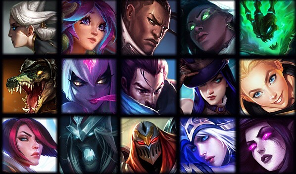

To help prepare you and your teammates for Clash, we are recommending team comps dominate your bracket. The team comps have varying playstyles so you can find the best fit for your squad. For each team comp, we will have a set of five ideal champions along with alternatives in case some of the champs get banned or picked by the enemy team. We tested these compositions in an actual game and we will provide you an in game footage of how effective these team compositions are.
Single Target Shutdown
Ideal Champs and Substitutions
This comp is very effective at effectively playing teamfights by dispatching one target at a time with their high amount of single target CC and damage. It is also a very effective composition at invading due to the strong level one provided by Thresh and Camille. Your early game is dictated by Viego's early dueling paired with Syndra's roaming ability to spread pressure to the side lanes. When it comes to teamfighting, your goal is to kite backwards and lockdown and burst anyone who steps too close.
In Game Footage of Team Composition
The Submarine
Ideal Champs and Substitutions
We have a comp that’ll have your enemies barking in all chat for how much you were willing to commit to picking off a player. To me, this is the true one and only submarine comp.Look for opportunities to dive with Nocturne + Shen R as your Twisted Fate would be able to ultimate and teleport without being noticed to follow up. You’ll have another great initiation tool from the Jhin & Leona combo to make picks all the more easier for your Nocturne and Twisted Fate. Be sure to play safe and farm until level 6, and make plays around your TF or Nocturne and prioritize Rift Heralds early so that you can get to your item spikes much quicker.
In Game Footage of Team Composition
Buff Bruisers
Ideal Champs and Substitutions
This comp revolves around strong skirmishing champions who do well in tight-knit fights and supporting them with the powerful shielding/sustain/CC from a double enchanter bot lane. With the amount of self-healing and sustained damage available to the bruisers combined with the enchanter healing, it becomes extremely difficult to deal with this composition if you don’t take someone down as they’ll quickly heal back up again.
In Game Footage of Team Composition
Double AD lanes + AP Jungler
Ideal Champs and Substitutions
This was a staple in pro play toward the end of 2020 and it’s a great choice if your team doesn’t really have tank players. It allows your AD laners to play aggressively while your AP junglers scale to 6 quickly and makes it easy to contest early Dragons and Rift Heralds. If all goes according to plan, the enemy team will have difficulty itemizing since your team will have a balanced attack of AP/AD. Note that Lucian can effectively act as a triple flex, so make sure your top, mid, and ADC can all play him proficiently to maximize that perk.